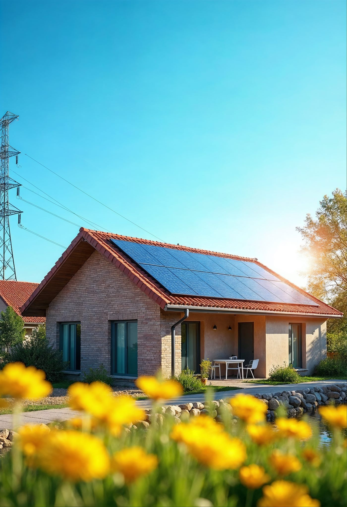

Strom vom eigenen Dach.
Senken Sie Ihre Stromrechnung und machen Sie sich unabhängiger von steigenden Energiepreisen.
Eigenen Strom erzeugen, Heizkosten senken und unabhängiger werden: Wir planen Photovoltaik, Stromspeicher und Solarthermie passend zu Ihrem Haus – ideal kombiniert mit der Wärmepumpe.
Von der ersten Auslegung bis zur fertigen Anlage planen und installieren wir Ihre Solartechnik – sauber, sicher und auf Ihren Verbrauch abgestimmt.
Senken Sie Ihre Stromrechnung und machen Sie sich unabhängiger von steigenden Energiepreisen.
Mit einem passenden Stromspeicher nutzen Sie Ihre Sonnenenergie auch dann, wenn die Sonne nicht scheint.
Selbst erzeugter Strom betreibt Ihre Wärmepumpe besonders günstig – wir stimmen beides aufeinander ab.

Mit einer passend ausgelegten Photovoltaik-Anlage und optionalem Speicher nutzen Sie Ihre Sonnenenergie selbst – und machen sich ein gutes Stück unabhängig von steigenden Strompreisen.
Eine Photovoltaik-Anlage ist schneller umgesetzt, als viele denken – wenn Planung, Montage und Anmeldung in einer Hand liegen. Wir übernehmen den gesamten Ablauf für Sie und kümmern uns auch um die Formalitäten beim Netzbetreiber.
Ob sich Solar für Sie lohnt, entscheidet vor allem der Eigenverbrauch: Jede selbst genutzte Kilowattstunde ersetzt teuren Netzstrom. Überschüssiger Strom wird ins Netz eingespeist und vergütet. Drei Hebel bestimmen, wie schnell sich die Anlage rechnet:
Wir rechnen Ihnen Ihre Anlage ehrlich durch – mit realistischen Annahmen statt Schönrechnerei. So wissen Sie vor der Entscheidung, was sich für Ihr Dach und Ihren Verbrauch tatsächlich lohnt.
Photovoltaik, Stromspeicher und Solarthermie – eigener Strom und echte Unabhängigkeit, sauber installiert.
Kostenlose BeratungIn den meisten Fällen ja: Sie senken Ihre Stromkosten und machen sich unabhängiger. Wir prüfen Dachfläche, Ausrichtung und Verbrauch und rechnen es transparent für Sie durch.
Ja, das ist eine ideale Kombination: Der selbst erzeugte Solarstrom betreibt die Wärmepumpe besonders günstig. Wir planen beides aufeinander abgestimmt.
Photovoltaik erzeugt Strom, Solarthermie erzeugt Wärme für Heizung und Warmwasser. Wir beraten Sie, welche Lösung – oder Kombination – zu Ihrem Haus passt.
Mit einem Speicher nutzen Sie Ihren Solarstrom auch abends. Ob sich das für Sie rechnet, hängt von Ihrem Verbrauch ab – wir beraten Sie ehrlich.
Das richtet sich nach Ihrem Stromverbrauch, der Dachfläche und ob Sie Wärmepumpe oder E-Auto mitversorgen möchten. Wir legen die Anlage so aus, dass Eigenverbrauch und Wirtschaftlichkeit zusammenpassen.
Strom, den Sie nicht selbst verbrauchen, wird ins öffentliche Netz eingespeist und vergütet. Mit einem Speicher lässt sich der Anteil, den Sie selbst nutzen, deutlich erhöhen.
Ja, eine PV-Anlage muss beim Netzbetreiber und im Marktstammdatenregister angemeldet werden. Diese Formalitäten übernehmen wir für Sie mit.